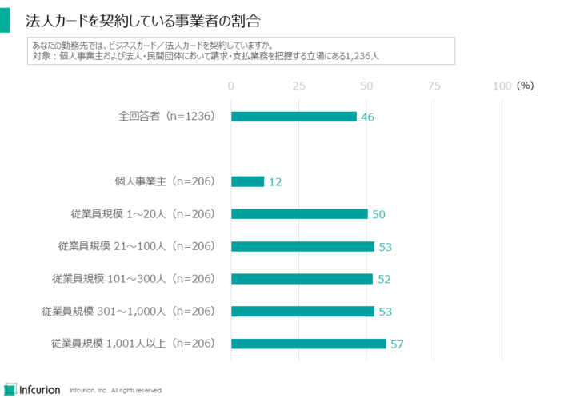
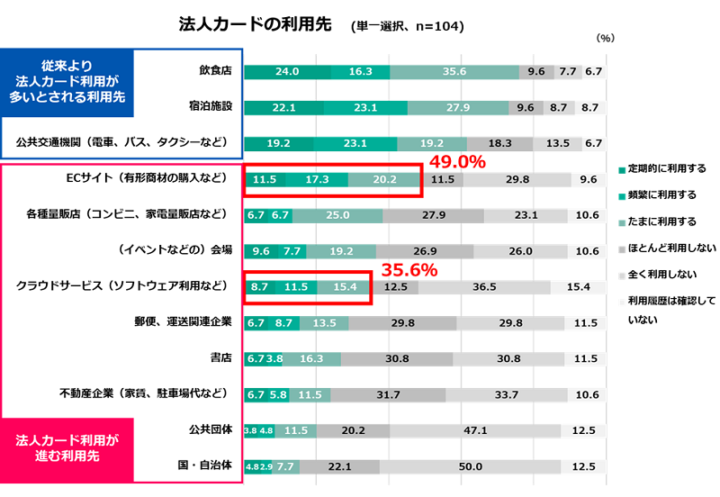

本記事は、全4回の「Xard（エクサード）で法人カード発行」シリーズの第1回です。ここでは、法人カードにまつわる3つのトレンドを紹介します。BtoB事業者が法人カード発行できる時代が既に訪れています。BtoB事業者が法人カード発行を検討すべき理由と、その方法について解説します。
目次
今、なぜ「法人カード」か？
法人カードとは、法人や個人事業主に対して発行されるクレジットカードのことで、「コーポレートカード」や「ビジネスカード」と呼ばれることもあります。個人用クレジットカードは日常生活の様々な場面で利用されるのに対し、法人カードは業務の様々な場面での支払いに使うためのものです。
キャッシュレス化が急速に進行している日本社会。個人によるクレジットカード利用も拡大していっていますが、クレジットカードの利便性は個人だけのものではありません。法人企業にとっても同様に、法人カードは便利なツールです。
御社が法人顧客を対象とするBtoB事業を営んでいるならば、御社にも「自社顧客への法人カード発行」という選択肢があることを知っていただきたいと思います。現在、中小企業から大手まで、様々な規模の企業が法人カードを利用しています。また、ビジネスのオンライン化に伴って、法人カードの新しい利用シーンが生まれています。つまり、御社の法人顧客にとって、法人カードは便利な業務ツールになりうるもので、それを御社が提供することで御社のサービス／商品の価値をさらに高められる可能性があります。
ただ、「カード発行はカード会社や銀行の領域では？自社では無理ではないか？」と考えてしまうかもしれません。しかし心配いりません。クラウドやAPIといったモダンなテクノロジーを活用して生み出されたカード発行プラットフォームの登場で、一般事業者が顧客向けに法人カードを発行するハードルが既に劇的に低下しているのです。
まとめると、以下の3つのトレンドが、法人カード拡大の追い風となっています。
- ①企業規模を問わず、法人カードの利用が浸透
- ②ビジネスのオンライン化に伴い、法人カードの利用シーンが拡大
- ③BtoB事業者が顧客向けに法人カードを発行するハードルが劇的に低下
以下では、これらを順に説明していきます。
トレンド：企業規模を問わず、法人カードの利用が浸透
法人カードとは決して新しいものではなく、数十年前から普及しています。しかし、これまでの法人カードは「一部の大企業や経営者が利用するもの」というイメージがあったのではないでしょうか。
しかし近年、中小事業者を含む様々な企業において、法人カードの活用が活発化しています。一般社団法人日本クレジット協会によると、2024年3月末時点での法人カード発行枚数は1,169万枚に達しています。
それでは、どのような企業が法人カードを契約しているのでしょうか？やはり大手企業ばかりなのでしょうか？答えは「No」です。

図1 法人カードを契約している事業者の割合（株式会社インフキュリオン「ビジネス決済総合調査2024」より）
図1に示しているのは、わたしたちインフキュリオンの「ビジネス決済総合調査2024」で得られた結果のひとつです。回答者である1,236の事業者のうち「法人カードを契約している」と回答したのは46%でした。さらに深掘りすると、法人企業においては、従業員規模に関わらず法人カード契約率が50%～57%でした。「法人カードは大企業向け」というイメージは誤りであって、実際には「事業規模に関わらず法人カードは活用可能なツール」なのです。
従業員規模20人以下の小規模事業者から、1000人を超える大企業まで、様々な企業で活用が広がっている法人カード。御社の法人顧客にも、法人カードのニーズは確実に存在しているといえるでしょう。そして次に説明するとおり、ビジネスのオンライン化が進行している現在、法人カードの利用シーンは従来よりも大きく広がっています。
トレンド：ビジネスのオンライン化に伴い、法人カードの利用シーンが拡大
法人カードはどういったシーンで利用されているか、ご存じでしょうか。接待などでの飲食店での支払い、出張時の宿泊費や交通費などが思い浮かぶかもしれません。
もちろん、法人カードはそうした場面でも便利な支払手段ですが、近年では法人カードの利用シーンも大きく広がっています。特に、2020年に始まったコロナ禍以降の急速な社会のデジタル化とビジネスのオンライン化において、法人カードが強い武器となっているのです。
図2に示すのは、わたしたちインフキュリオンが2024年に実施した「法人カード利用実態調査」で、法人カードの用途を調査した結果です。従来から法人カードの利用が多いとされていた飲食店や出張関連以外に、
- ECサイトの物品購入
- クラウドサービス（SaaS）利用
などでも利用されていることが分かりました。
ビジネスのオンライン化が進む中、ECサイトやクラウドサービスの利用が普及し、法人カードは不可欠なツールとなっています。これまで一般的だった請求書による銀行振込ではなく、外資系プラットフォーマーが提供する多くのサービスではカード決済が前提となっている点も要注意です。デジタル化の潮流に乗り、業務を効率化するためには、法人カードの導入が必須となっているといえます。

図2 法人カードの利用先（株式会社インフキュリオン「法人カード利用実態調査」より。質問：役員・従業員の方は、以下の場所や業種に対して、法人クレジットカードを利用しますか。対象者のうち、所属企業の従業員が法人カードを利用しており、回答者自身が部長職以上の人、102人を対象とした質問)）
この傾向は、御社にとって大きなビジネスチャンスです。
デジタル化が進む現代において、顧客企業は業務の効率化と生産性向上を強く求めています。請求書払いという従来の手法に加えて、法人カードによるスムーズな決済も導入したいニーズは、今後ますます高まるでしょう。
ここで重要になるのが、御社も自社顧客に法人カードを発行することができる、ということです。法人カードを発行することで、顧客企業は御社のサービスや商品をより手軽に、そして継続的に利用できるようになります。また、御社にとっては顧客との関係性をより強固にし、ロイヤリティを高めることにつながります。さらには決済データを活用した新たなマーケティング施策の展開や、サービスの利用状況に応じたきめ細やかなサポートなど、御社の事業戦略の幅も大きく広がることでしょう。
これまで、法人カードの発行はカード会社や銀行など金融機関の専門領域と考えられていました。しかし、今やその状況は大きく変わっています。クラウドやAPIといった最新技術を活用した「カード発行プラットフォーム」の登場により、BtoB事業者は自社顧客向けに法人カードを、驚くほど手軽に提供できる時代になったのです。
トレンド：BtoB事業者が顧客向けに法人カードを発行するハードルが劇的に低下
わたしたちインフキュリオンの「Xard（エクサード）」は、そのようなカード発行プラットフォームです。Xardを利用することで、これまでカード事業に縁のなかったBtoB事業者でも、法人カード発行者になることができます。
Xardについての詳しい解説は本シリーズ第4回記事に譲るとして、ここではXardの特徴を４つ挙げておきます：
- ①カード発行・管理に必要な共通機能をモジュール・API化してご提供しています。自社オリジナルのJCBまたはVisaカードを、簡単かつ低コストで発行することができます。
- ②カード事業を始めるために必要なライセンスの取得を支援します。
- ③さらに、カード発行者として必要となる決済処理機能・オペレーション業務をワンストップでご提供しています。
- ④御社の独自性が求められる領域（UI/UX・リワード・社内ワークフロー・オペレーションなど）についても、自由に構築することが可能です。
Xardは、このような特徴を持つことで、SaaS事業者やWebサービス事業者など、さまざまな企業のビジネスニーズに対応し、新たな金融体験の創出をサポートします。
BtoB事業者も法人カード発行できる時代
この記事では、法人カードが今なぜ注目されているのか、そして法人カード発行がBtoB事業者にとって大きなチャンスとなる3つのトレンドについて解説しました。
- ①企業規模を問わず、法人カードの利用が浸透
- ②ビジネスのオンライン化に伴い、法人カードの利用シーンが拡大
- ③BtoB事業者が顧客向けに法人カードを発行するハードルが劇的に低下
クラウドやAPIといった最新技術を活用したカード発行プラットフォーム「Xard」を使えば、これまでカード事業とは無縁だったBtoB事業者でも、自社の顧客に向けてオリジナル法人カードを発行できます。
シリーズ第２回以降では、今回軽く触れるにとどまったそれぞれのトピックについて深掘り解説していきます。お楽しみに！
「Xard（エクサード）で法人カード発行」シリーズ
- （１）BtoB事業者もカード発行できる！法人カードを取り巻く最新3トレンド（今回）
- （２）顧客との関係を劇的に変える！BtoB事業者の「法人カード戦略」解説
- （３）モダンな法人カードで新たなデジタルビジネスを創造するための4つのパターン
- （４）「Xard（エクサード）」で成功する、顧客に選ばれる「カードビジネス」戦略（近日公開）


{kind=link}
{kind=link}
{kind=link}